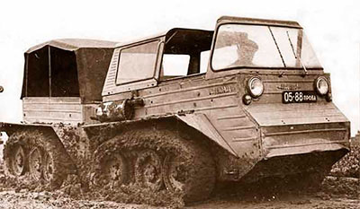

О машинах ELF: история-проектирование-производство-эксплуатация-рынок
При проектировании и производстве транспортно-технологических машин ELF задействован опыт ведущих специалистов нижегородской школы вездеходных машин при Нижегородском Государственном Техническом Университете (НГТУ).
Первой вехой в развитии нижегородской школы вездеходных машин является создание в 30-е годы ХХ века при Горьковском индустриальном институте научно-исследовательской лаборатории снегоходных машин (НИЛСМ). Основателем НИЛСМ является выпускник 1929 г. механического факультета Нижегородского государственного университета (настоящий НГТУ) доцент М.В. Веселовский. На данном этапе были заложены научные основы проходимости машин по снегу, разработаны опытные образцы аэросаней и теория их движения.
Вторая веха 1946 г. связана с приходом в ГПИ (настоящий НГТУ) С.В. Рукавишникова в качестве ведущего конструктора первых снегоболотоходных машин. За время совместной работы 1946-1952 гг. М.В. Веселовским и С.В. Рукавишниковым создаются первые снегоболотоходные машины ГПИ-С20 и ГПИ-21 (1947г.), а также ГПИ-22 (1948 г.). На данном этапе проводились фундаментальные опытно-конструкторские и научно-исследовательские работы по созданию гусеничных снегоболотоходов.
Третья веха 1962 г. связана с организацией научно-исследовательской лаборатории вездеходных машин (НИЛВМ), а в 1965 г. придания лаборатории статуса отраслевой лаборатории (ОНИЛВМ). Основателем и руководителем ОНИЛВМ являлся профессор, к.т.н. С.В. Рукавишников. В этот период выполнялся широкий спектр научно-исследовательских работ связанных с проходимостью, динамикой гусеничных машин. Одним из первых направлений опытно-конструкторских работ с момента образования ОНИЛВМ является создание легких лыжногусеничных машин (мотонарт) и легких гусеничных машин. В процессе разработки темы с 1963 г. по 1975 г. были созданы и испытаны экспериментальные образцы различных конструкций легких гусеничных машин (рис.1): С-ГПИ-19 (1964 г.); ГПИ-17 (1965 г.); ГПИ-19А (1966 г.).
|
|
|
|
Рис.1 Легкие гусеничные машины ГПИ |
|

Ведущими сотрудниками ОНИЛВМ являлись В. А. Малыгин, Л.В. Барахтанов, В.И. Ершов, А.П. Куляшов, В.В. Беляков, Н.Б. Веселов, В.А. Антонец, А.В. Князев, А.А. Аникин, А.А. Алипов и др.
Четвертой вехой 2003 г. является создание НИЛ «Транспортных машин и транспортно- технологических комплексов». Основные направления деятельности НИЛ «ТМ ТТК» остались прежними, что и у ОНИЛВМ, но с учетом специфики современной рыночной экономики. Директором был назначен д.т.н., доцент кафедры «Автомобили и тракторы» А. А. Аникин.
Из истоков ОНИЛВМ в г. Нижнем Новгороде выросли ведущие предприятия по производству вездеходных машин ЗАО «Транспорт», ООО «Завод вездеходных машин», ООО «ТрансМаш», ИП Алипов снегоболотоход «Тритон».
Созданием легких гусеничных машин в советское время занимались и другие лаборатории. Особый интерес заслуживает легкая сочлененная гусеничная машина, показанная на рис.2.
|
 |
|
|
Рис.2 Сочлененная двухзвенная машина НАМИ-0106 |
|
Компания ELF по производству малогабаритных транспортно-технологических машин является продолжателем одного из направлений нижегородской школы вездеходных машин, а именно, направления легких гусеничных вездеходов. Малогабаритные тракторы и вездеходы компании ELF являются объектом научных исследований (автора данной статьи) в области динамики ходовой системы и проходимости по грунтам с низкой несущей способности. Вездеходы и тракторы проходят непрерывные (перманентные) испытания с целью повышения надежности.
Следует особо отметить современные средства автоматизированного проектирования машин, существенно облегчающих труд инженера-конструктора, избавляющих от рутинной работы по типовым инженерным расчетам и графическому оформлению. Все это позволяет сосредоточить внимание исключительно на творческой работе конструирования, дает возможность проработки и анализа широкого спектра конструкторских решений и выбрать из них оптимальное. Особенно контрастно преимущества современного 3D моделирования показаны на рис. 3, который не нуждается в комментариях и вызывает уважение к конструкторам времен кульмана.
|
Рис.3 Современные средства проектирования |
|
Одной из важных задач проектирования также является принятие решения об элементной базе машины, иначе говоря, - какие узлы и агрегаты применить унифицированными с другой техникой, а какие изготовить оригинальными. Эта задача является, без преувеличения, краеугольным камнем многих инженеров. Одна крайность - максимально возможное применение стандартных и унифицированных узлов и агрегатов, характерна для непрофессиональных изготовителей. Другая – минимальное число стандартных и унифицированных узлов, характерна для крупных предприятий при создании новых видов техники. В современных условиях для предприятия со средними производственными мощностями опыт проектирования показывает необходимость нахождения золотой середины, когда некоторые, наиболее дорогие в изготовлении агрегаты и детали унифицируются с серийно выпускаемой продукцией, а часть изделий выполняется оригинальными. При нахождении этого баланса учитывается много факторов: наличие и доступность подходящих деталей и агрегатов на рынке, их качество и цена, ремонтопригодность машины и доступность запчастей. На этапе проектирования закладываются качества машины на всех дальнейших стадиях ее реализации и жизненного цикла: технологичность производства; унификация узлов и агрегатов; себестоимость машины, технико-эксплуатационные и потребительские свойства, утилизируемость. Критерии оптимального проектирования существенно изменились со времен прошлого века в связи с резким скачком в области технологии производства и металлообработки: появились высокопроизводительные методы лазерного раскроя листового металла, гидроабразивная обработка, электроэрозионные методы резки металла и пр. Существенно расширился ассортимент конструкционных материалов с высокими физико-механическими свойствами: применение высококачественных резиновых составов, полиуретановых, полиамидных, фторопластовых материалов и покрытий и пр.
Транспортно-технологические машины ELF созданы на стыке современных технологий, современного рынка комплектующих и материалов. Основные конструктивные особенности машин это: гидрообъемная трансмиссия; сверхкомпактные современные дизельные двигатели; резиновая гусеница оригинального изготовления. Основные потребительские качества машин: умеренная цена, надежность; ремонтопригодность, удовлетворение высоким требованиям к внешнему виду.
к.т.н., доцент НГТУ
П.Е. Дмитриев
Материалы для скачивания
Каталог навесного оборудования
Прайс-лист
Дополнительные опции
Скачать каталог >>
Каталог запчастей
Примеры комплектаций
Доп. предложения
Версии и комплектации тракторов ELF

Гусеничное тракторное шасси «A»
Подробнее
Гусеничное вездеходное шасси «B»
Подробнее
Гусеничное транспортное шасси «C»
Подробнее
Колесное многоцелевое шасси «D»
ПодробнееДвухзвенные гусеничные шасси «АхА», «ВхВ», «CxC»

Подробнее